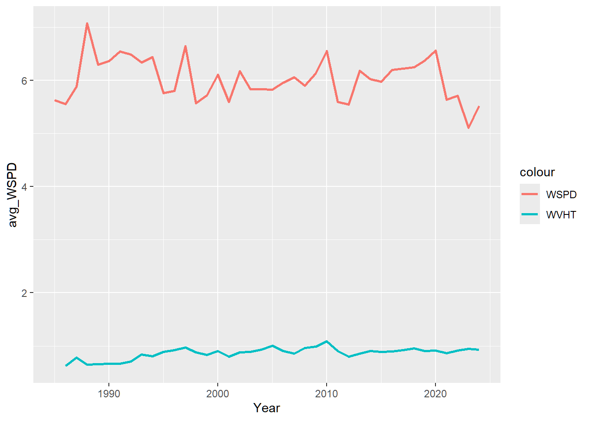

library(data.table)
library(dplyr)
library(lubridate)
library(ggplot2)
library(zoo)
library(tibble)
library(readr)Tingji-AssignmentD
These are the given code from Buoy_students.qmd
file_root <- "https://www.ndbc.noaa.gov/view_text_file.php?filename=44013h"
tail <- ".txt.gz&dir=data/historical/stdmet/"
load_buoy_data <- function(year) {
path <- paste0(file_root, year, tail)
header <- scan(path, what = 'character', nlines = 1)
num_columns <- length(header)
if (num_columns == 16) {
buoy <- read.table(path, fill = TRUE, header = TRUE, sep = "")
buoy <- add_column(buoy, mm = NA, .after = "hh")
buoy <- add_column(buoy, TIDE = NA, .after = "VIS")
} else if (num_columns == 17) {
buoy <- read.table(path, fill = TRUE, header = TRUE, sep = "")
buoy <- add_column(buoy, TIDE = NA, .after = "VIS")
} else {
buoy <- fread(path, header = FALSE, skip = 1, fill = TRUE)
setnames(buoy, header)
}
return(buoy)
}
all_data <- lapply(1985:2024, load_buoy_data)
combined_data <- rbindlist(all_data, fill = TRUE)combined_data <- combined_data %>%
mutate(
YY = as.character(YY),
`#YY` = as.character(`#YY`),
YYYY = as.character(YYYY)
)
# Combine year columns safely using coalesce
combined_data <- combined_data %>%
mutate(YYYY = coalesce(YYYY, `#YY`, YY))
combined_data <- combined_data %>%
mutate(BAR = coalesce(as.numeric(BAR), as.numeric(PRES)), # Convert BAR and PRES to numeric
WD = coalesce(as.numeric(WD), as.numeric(WDIR)))
combined_data <- combined_data %>%
select(-TIDE, -TIDE.1, -mm,- WDIR, -PRES,-`#YY`,-YY)
combined_data$datetime <- ymd_h(paste(combined_data$YYYY, combined_data$MM, combined_data$DD, combined_data$hh, sep = "-"))
combined_data <- combined_data %>%
mutate(across(everything(),
~ na_if(as.numeric(as.character(.)), 99) %>%
na_if(999) %>%
na_if(9999)))
if (!inherits(combined_data$datetime, "POSIXct")) {
combined_data$datetime <- ymd_h(paste(combined_data$YYYY, combined_data$MM, combined_data$DD, combined_data$hh, sep = "-"))
}
combined_data <- combined_data %>%
mutate(Year = year(datetime))
combined_data <- combined_data %>% select(-YYYY)
#Start of my Assignment D Question: Is there a correlation between WSPD and WVHT?
yearly_avg_data <- combined_data %>%
group_by(Year) %>%
summarise(
avg_WSPD = mean(WSPD, na.rm = TRUE),
avg_WVHT = mean(WVHT, na.rm = TRUE),
avg_BAR = mean(BAR,na.rm = TRUE)
)
ggplot(data = yearly_avg_data,aes(x = Year))+
geom_line(aes(y = avg_WSPD,color = "WSPD"),size = 1) +
geom_line(aes(y = avg_WVHT,color = "WVHT"),size = 1)
We can see a roughly positive relationship between these two elements.
To examine this more closely, we focused on 2024 data. We need to use scatter point and linear model to find out the result based on 2024 data
df2024 <- read.csv("2024.txt",sep = "",header = TRUE)
df2024 <- df2024[-1,]
df2024 <- df2024 %>%
mutate(
date_label = paste0(as.integer(MM), ".", as.integer(DD)),
WSPD = as.numeric(WSPD),
WVHT = as.numeric(WVHT)
)
#clean up the data set and make wspd and wvht numeric
df2024_daily <- df2024 %>%
group_by(date_label) %>%
summarise(
avg_WSPD = mean(WSPD, na.rm = TRUE),
avg_WVHT = mean(WVHT, na.rm = TRUE),
)
fit <- lm(avg_WVHT ~ avg_WSPD,data = df2024_daily)
summary(fit)
Call:
lm(formula = avg_WVHT ~ avg_WSPD, data = df2024_daily)
Residuals:
Min 1Q Median 3Q Max
-0.7790 -0.2905 -0.1782 0.1940 2.5716
Coefficients:
Estimate Std. Error t value Pr(>|t|)
(Intercept) 66.04891 0.06250 1056.73 <2e-16 ***
avg_WSPD 0.09048 0.01029 8.79 <2e-16 ***
---
Signif. codes: 0 '***' 0.001 '**' 0.01 '*' 0.05 '.' 0.1 ' ' 1
Residual standard error: 0.4792 on 364 degrees of freedom
Multiple R-squared: 0.1751, Adjusted R-squared: 0.1728
F-statistic: 77.27 on 1 and 364 DF, p-value: < 2.2e-16ggplot(df2024_daily, aes(x = avg_WSPD, y = avg_WVHT)) +
geom_point(alpha = 0.6) +
geom_smooth(method = "lm", col = "red") +
labs(title = "WVHT vs WSPD",x = "Wind speed",y = "Wave height")`geom_smooth()` using formula = 'y ~ x'
From the plot and regression model, we can tell there’s a positive relationship between WVHT and WSPD. However, wind speed alone explains only about 17% of the variance, so other factors beyond only wind speed are important in determining observed wave heights.